Ejercicio 1 -
Comparación de red host-only, NAT y bridged
En este ejercicio vamos a crear una máquina virtual XP a la
que iremos, por turno, configurando su NIC virtual en modo host-only,
NAT y bridged; en cada caso, comprobaremos la conectividad de red y
comportamiento de la máquina virtual usando tres
herramientas:
ipconfig
ping
Una conexión a dos mini-servidores web,
alojados en las direcciones http://172.168.56.15 y
http://150.214.109.89, que nos devuelven como respuesta la
dirección IP desde la que se ha accedido a dicho servidor.
Para realizar el ejercicio seguimos estos pasos:
1)
Comenzaremos creando un clon enlazado de la máquina XP Curso FP, usando
como base su instantánea Inicial. Para ello,
usar el menú VM
-> Manage -> Clone, y seguir el
procedimiento de creación de un clon enlazado que ya vimos
en el Ejercicio 2 de la Práctica 6; usar como nombre de
máquina XP_red,
y crearla en el directorio D:\practicas\MV\XP_red.
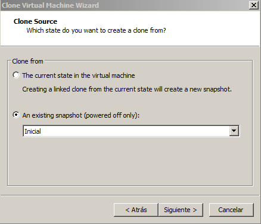
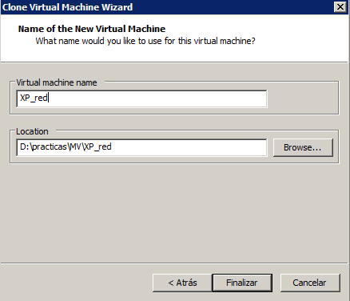
2) En VMware
Workstation, cerrar el Tab de la máquina virtual XP Curso FP. En el
Tab de la máquina XP_red,
observar que la configuración de la tarjeta de red es host_only.
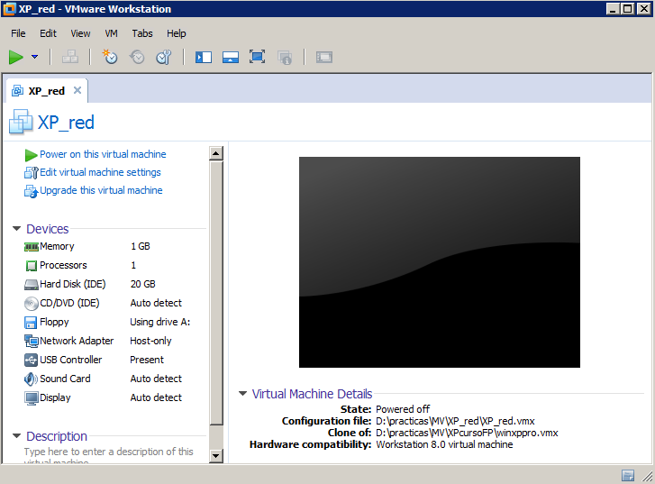
3) Arrancar
la máquina virtual. Usando el menú Inicio -> Panel de Control
-> Firewall de Windows activar el cortafuegos (no
es necesario para la máquina host-only, pero así
ya tendremos la máquina protegida cuando la configuremos en
modo NAT y bridged).
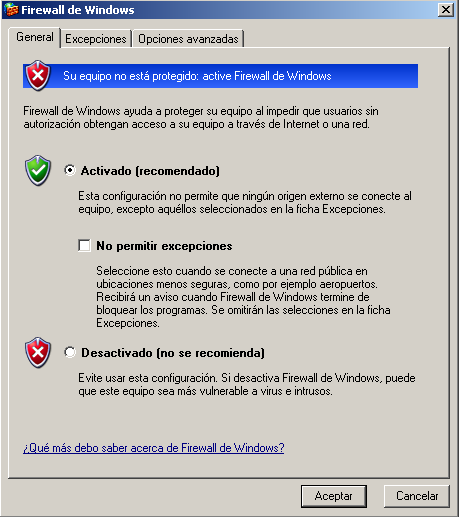
4) Abrir un cmd, y usar ipconfig /all
para
obtener la información de red detallada. Veremos que la
máquina está usando una dirección
10.0.0.x, proporcionada por el servidor de DHCP 10.0.0.254 (la figura
muestra un ejemplo de cómo es la salida de este comando, pero
obviamente la dirección IP obtenida será distinta a la
que aparece en la figura).
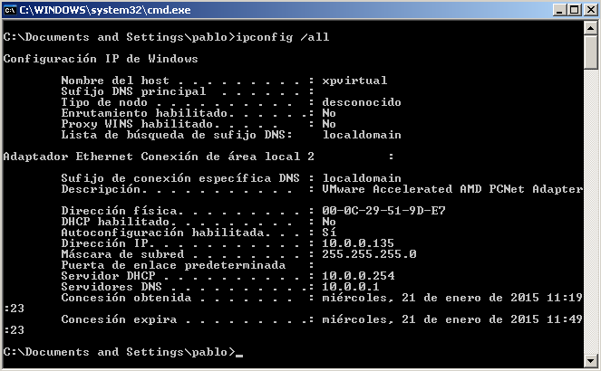
5) Hacemos ping a la
dirección 10.0.0.1 (que es la asignada por el hipervisor al
propio host); obtendremos una respuesta positiva, lo que indica que la
red host-only funciona correctamente.
5) Ahora
hacemos ping
a la dirección 172.16.52.15 (la dirección IP que el
equipo del profesor tiene asignada en la red física
real). Como la NIC virtual está configurada en modo
host-only, no tiene acceso a la red real, y obtendremos un error de
"host inaccesible".
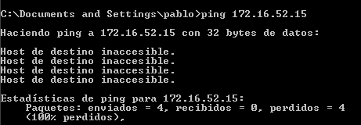
6) Apagamos
la máquina virtual.
7) Una vez
apagada, editamos sus settings y cambiamos la configuración
de su adaptador de red para ponerlo en modo NAT, tras lo cual volvemos
a arrancar la máquina.
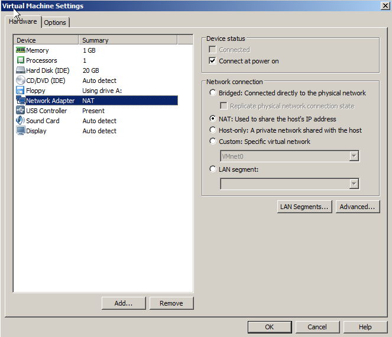
8) Una vez
finalizado el arranque, volvemos a usar ipconfig /all
para
ver la configuración de red de la máquina.
Observaremos que ahora la dirección IP (asignada por el servidor
DHCP del hipervisor para la red VMnet8) será una 10.0.1.x;
ésto es debido a que la red VMnet8,
correspondiente al interfaz de NAT, está configurada como
10.0.1.0/255.255.255.0.
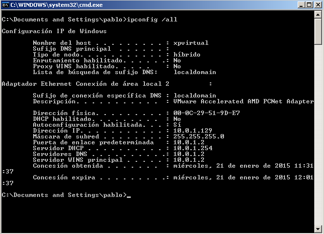
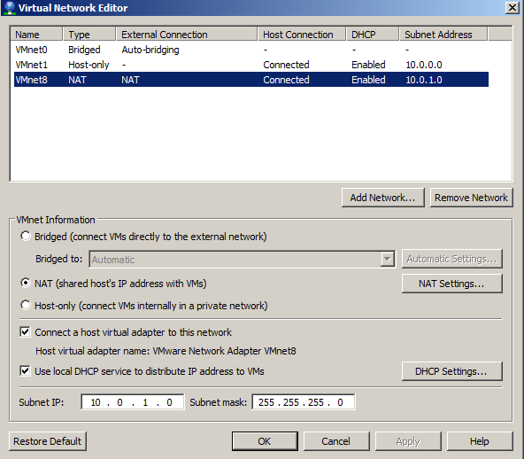
9)
Ejecutamos ahora ping 172.16.52.15. Como la red NAT sí tiene acceso a la
red externa, recibiremos contestación positiva desde la
máquina destino.
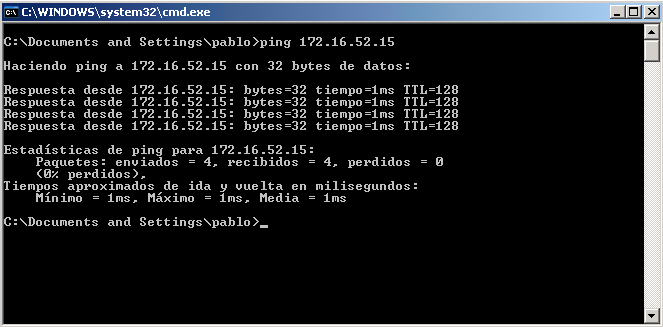
10) Ahora,
abrimos el navegador Firefox del XP, y accedemos a la URL http://172.16.52.15.
Obtendremos un resultado similar al de la figura (el último
dígito de la dirección IP será
distinto).
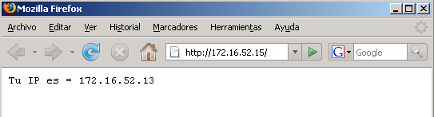
La dirección IP mostrada en la página es la
dirección que el servidor HTTP ha visto como
orígen de la conexión. Este resultado nos indica,
entonces, que la dirección IP de los paquetes que
transportan el tráfico HTTP entre la máquina
virtual (10.0.1.x) y el servidor HTTP (172.16.52.15) ha sido modificada
por el mecanismo de NAT, sustituyendo la dirección 10.0.1.x
por la dirección 172.16.52.y que corresponde a nuestro host.
11) Ahora,
apagamos la máquina virtual, y cambiamos sus settings para
que el interfaz de red virtual esté en modo bridged.
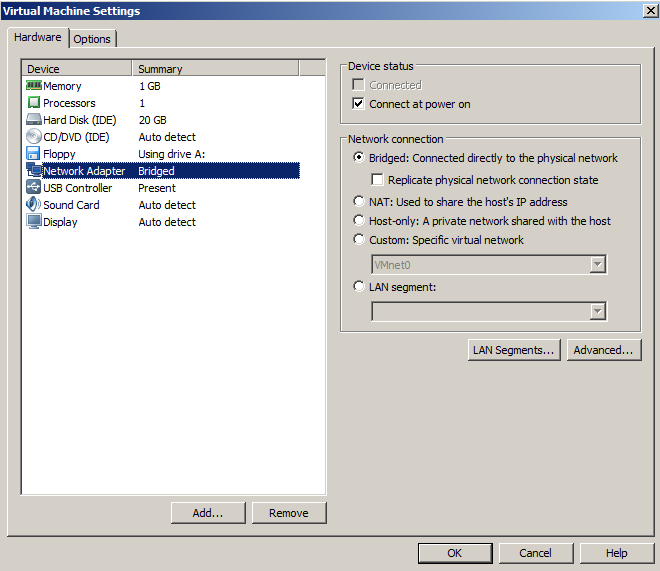
12)
Arrancamos la máquina virtual, y comprobamos con ipconfig /all su
configuración de red. Observamos que ahora la
máquina ha recibido por DHCP una dirección 172.16.52.x desde el servidor 172.16.52.254
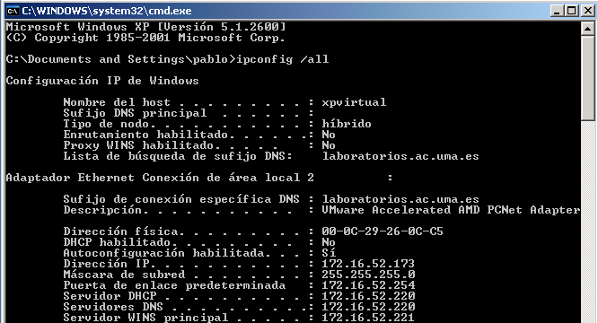
El direccionamiento 172.16.52.x es el de la subred real a la que
están conectados los ordenadores de prácticas, y
el servidor 172.16.52.254 es un servidor DHCP real, que da servicio a esa
subred. Todo ésto nos indica que nuestra máquina
virtual ha sido vista por el servidor DHCP como una máquina
"real", con entidad propia, y que por tanto, a nivel de red, se
está comportando como el resto de los ordenadores
físicos que implementan los puestos de trabajo del
laboratorio.
Vamos a ver con qué dirección IP llegan ahora
nuestras conexiones al servidor HTTP. Para ello, hacemos lo siguiente:
13) Mirar de
nuevo la salida que hemos obtenido de ipconfig para
recordar la IP asignada a nuestra máquina virtual.
14) Abrir el
Firefox, y acceder a http://172.16.52.15.
Comprobaremos que la dirección reportada en la
página coincide exactamente con la asignada a la
máquina, lo que indica que no ha habido ninguna
modificación en las cabeceras IP generadas en la
máquina virtual al pasar a través del interfaz de
red de la máquina real.
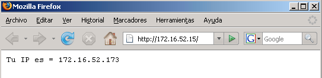
15) Finalizamos el ejercicio, cerrando la máquina virtual XP_red